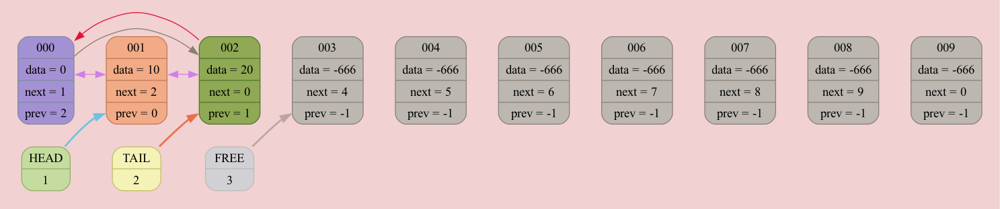
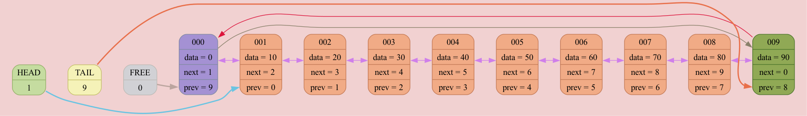
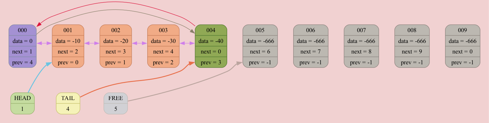

List[0x16f9a7000] born at "/Users/anatolij/Documents/GitHub/List/source/main.cpp": 8, name 'list'
DUMP #1: function INSERT_AFTER was called from /Users/anatolij/Documents/GitHub/List/source/main.cpp: 14

DUMP #2: function INSERT_AFTER was called from /Users/anatolij/Documents/GitHub/List/source/main.cpp: 14

DUMP #3: function INSERT_AFTER was called from /Users/anatolij/Documents/GitHub/List/source/main.cpp: 14

DUMP #4: function INSERT_AFTER was called from /Users/anatolij/Documents/GitHub/List/source/main.cpp: 14

DUMP #5: function INSERT_AFTER was called from /Users/anatolij/Documents/GitHub/List/source/main.cpp: 14

DUMP #6: function INSERT_AFTER was called from /Users/anatolij/Documents/GitHub/List/source/main.cpp: 14
DUMP #7: function INSERT_AFTER was called from /Users/anatolij/Documents/GitHub/List/source/main.cpp: 14

DUMP #8: function INSERT_AFTER was called from /Users/anatolij/Documents/GitHub/List/source/main.cpp: 14

DUMP #9: function INSERT_AFTER was called from /Users/anatolij/Documents/GitHub/List/source/main.cpp: 14

DUMP #10: function OUTSERT was called from /Users/anatolij/Documents/GitHub/List/source/main.cpp: 17
DUMP #11: function INSERT_AFTER was called from /Users/anatolij/Documents/GitHub/List/source/main.cpp: 19

List[0x16f9a7130] born at "/Users/anatolij/Documents/GitHub/List/source/main.cpp": 21, name 'list2'
DUMP #12: function INSERT_AFTER was called from /Users/anatolij/Documents/GitHub/List/source/main.cpp: 27
DUMP #13: function INSERT_AFTER was called from /Users/anatolij/Documents/GitHub/List/source/main.cpp: 27

DUMP #14: function INSERT_AFTER was called from /Users/anatolij/Documents/GitHub/List/source/main.cpp: 27

DUMP #15: function INSERT_AFTER was called from /Users/anatolij/Documents/GitHub/List/source/main.cpp: 27

DUMP #16: function INSERT_AFTER was called from /Users/anatolij/Documents/GitHub/List/source/main.cpp: 27

DUMP #17: function INSERT_AFTER was called from /Users/anatolij/Documents/GitHub/List/source/main.cpp: 27

DUMP #18: function INSERT_AFTER was called from /Users/anatolij/Documents/GitHub/List/source/main.cpp: 27
DUMP #19: function INSERT_AFTER was called from /Users/anatolij/Documents/GitHub/List/source/main.cpp: 27
DUMP #20: function INSERT_AFTER was called from /Users/anatolij/Documents/GitHub/List/source/main.cpp: 27

List[0x16f9a7000] born at "/Users/anatolij/Documents/GitHub/List/source/main.cpp": 8, name 'list'
DUMP #21: function INSERT_AFTER was called from /Users/anatolij/Documents/GitHub/List/source/main.cpp: 29

List[0x16f9a7130] born at "/Users/anatolij/Documents/GitHub/List/source/main.cpp": 21, name 'list2'
DUMP #22: function OUTSERT was called from /Users/anatolij/Documents/GitHub/List/source/main.cpp: 33